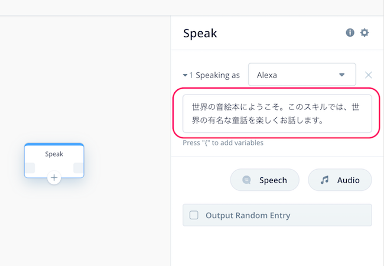
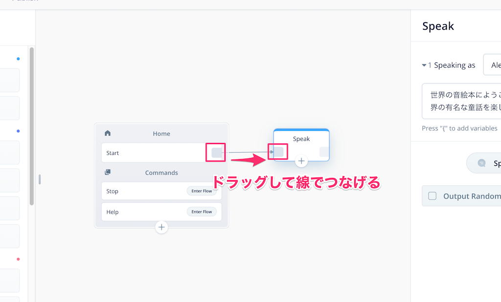
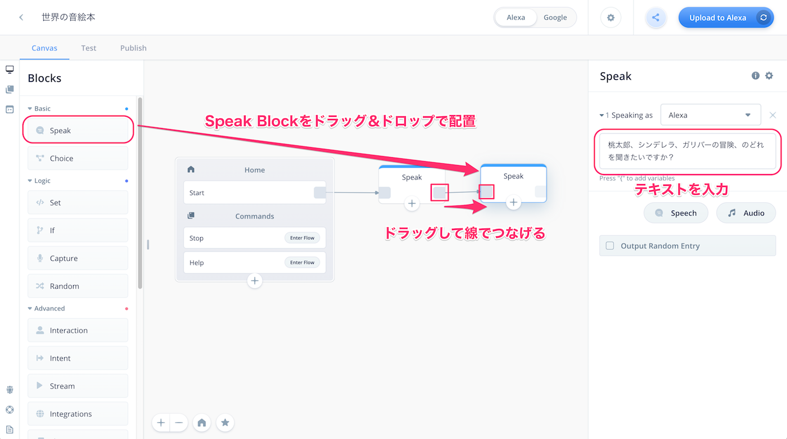
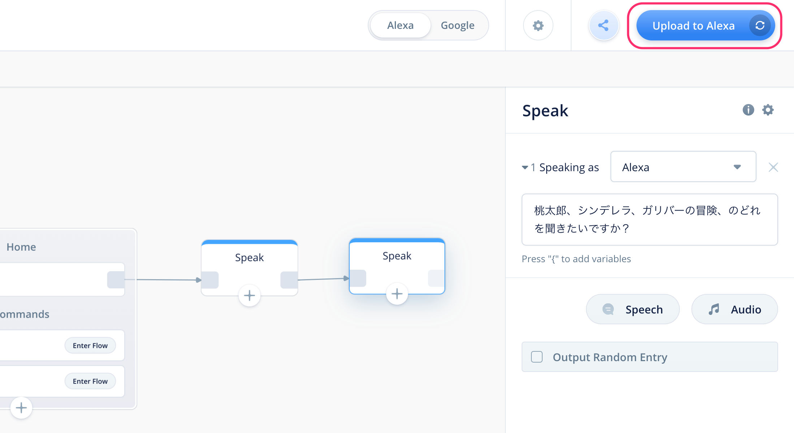
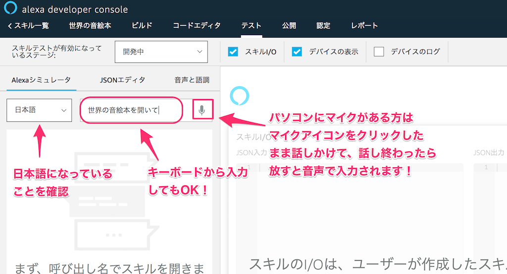
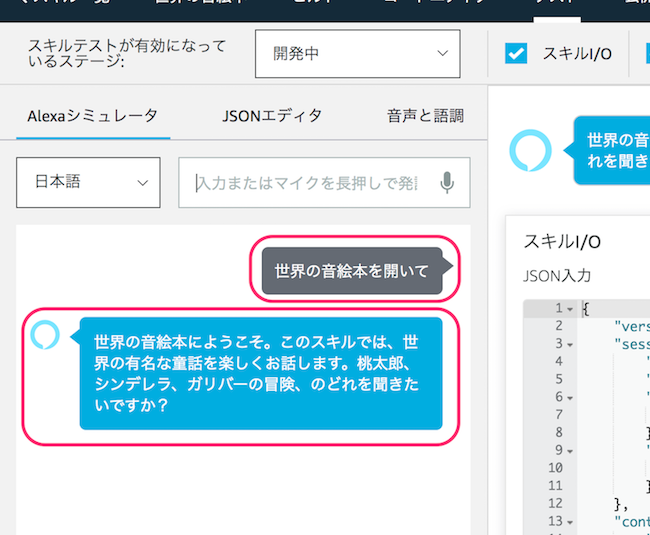

はじめに

本資料は、「Voiceflowハンズオン＆ワークショップ：インタラクティブな物語スキルを作ろう」のハンズオン用資料になります。
アカウントのセットアップなど事前準備は以下をご覧ください。
- Voiceflowハンズオン: アカウントのセットアップ手順
https://vf-handson-setup.netlify.com/#0
注意
更新履歴
- 2019/11/21 公開
ではNextをクリックしてください
プロジェクトの作成
最初にプロジェクトを作成して、かんたんにVoiceflowの画面の説明を行います。
以下のURLにアクセスしてください。
https://voiceflow.com/
右上の"Log in"をクリック。

アカウント作成した際のメールアドレスとパスワードを入力して"Sign in"をクリックします。

プロジェクトの一覧画面が表示されます。Default Listと書いてあるところの一番下の"Create Project"をクリックします。

プロジェクト作成画面が開きますので、以下の通り設定して、最後に"Create Project"をクリックします。
- プロジェクト名
- 今回は「世界の音絵本」と入力してください。
- スキルを呼び出すときのデフォルトの名前になります。（例：「アレクサ、◯◯◯を開いて」）
- 後でプロジェクト名と呼び出し名のそれぞれを変更することも可能です。
- 言語: "English(US)"のチェックを外して、"Japanese(JP)"にチェック

プロジェクトが作成されると"Canvas"画面が表示されます。"Canvas"画面がVoiceflowでスキルを作成する基本画面になります。
- 最初から用意してあるHome Blockの中にあるStartがスタート地点になります。
- 左のBlocksメニューにいろんな機能のBlockが用意されています。ここからBlockを選択してCANVAS上に配置します。
- CANVASに配置したBlockの設定を行い、アレクサに発話させたり、ユーザの発話を受け取ったりします。
- Block同士を線でつなげることで、会話の流れがつながっていきます。
- アップロードボタンをクリックすると、作成したプロジェクトがAlexa開発者コンソールにアップロードされ、Amazon Echoなどで呼び出せるようになります。
- Blocksメニュー以外にもいくつか別のメニューがありますが、後で説明します。

では早速やってみましょう。
CANVASとBlockの使い方
Voiceflowでは、いろんな機能を持ったBlockをCanvasに配置して線をつなぐことで、会話の流れを作ることになります。試しに少しやってみましょう。
左のBlocksメニューの一番上にある"Speak"というブロックを、最初から配置してあるHome Blockの右側あたりにドラッグ＆ドロップで配置してください。すると、画面の右側に別の設定画面が出てくると思います。

この設定画面の右上の入力欄に以下と入力してみてください。
世界の音絵本にようこそ。このスキルでは、世界の有名な童話を楽しくお話します。

そして、Home BlockのStartの右端からSpeak Blockの左端までドラッグしながら線でつなげます。

はい、これが基本的な操作になります。かんたんですよね？おさらいでもう一つSpeak Blockをつなげてみましょう。
- 最初に配置したSpeak Blockの右側にもう一つSpeak Blockを配置します。
- Speak Blockの設定画面の入力欄に以下を入力します
桃太郎、シンデレラ、ガリバーの冒険、のどれを聞きたいですか？ - Speak Block同士を線でつなげます。

２回目なのでもう大丈夫ですよね。ではここで作ったスキルを実際に動かしてみたいと思います。
スキルのアップロードとテスト
作成したスキルを動かすにはAlexa開発者コンソールへのアップロードが必要です。右上の"Upload to Alexa"というボタンをクリックしてください。

初回に限り、VoiceflowアカウントとAlexa開発者アカウントの紐付けが必要になります。"Connect Amazon"ボタンをクリックしてください。

Amazonアカウントのログイン画面が出てきますので、お持ちのAmazonアカウントでログインします。

VoiceflowからAmazonアカウント経由でAlexaスキル作成等の許可を求める画面が出てきますので、「許可」をクリックします。これでアカウントの紐付けは完了です。

アップロードが行われます。100%になるまで待ちます。

100％になって"Upload Successful"と表示されればアップロード完了です。ではAlexa開発者コンソールでテストしましょう。"Test on Alexa Simulator"をクリックしてください。

Alexa開発者コンソールのログイン画面が表示されたら、Amazonアカウントでログインしてください。

Alexa開発者コンソールのテストシミュレータ画面が表示されます。作成したスキルはここでほぼ実機と同じようにテストができます。

なお、この時、左上のところで「非公開」が選択されていた場合は「開発中」に変更します。

テストは文字だけでなく音声でも行なえます。まず最初にマイクを有効にしておきましょう。「許可」をクリックします。

ではいよいよテストです。「日本語」が選択されていることを確認して、マイクアイコンをクリックしたままマイクに「音絵本を開いて」と話しかけて、話し終わったら話してみてください。パソコンにマイクがない場合は、キーボードから入力してENTERキーを押してください。

あなたの発話に対して、Voiceflowで設定した内容をAlexaが返してくれればテストは成功です！これでスキル開発の第一歩を踏み出したことになります！おめでとうございます！

このように、Voiceflowでスキルを作成 → Alexa開発者コンソールにアップロード → Alexa開発者コンソールでテスト、というのがVoiceflowでのスキル開発の流れになります。どうでしょうか？そんなに難しくないですよね？この調子で続けていきましょう！
"Next"をクリックしてください